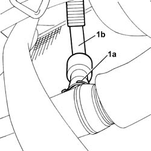
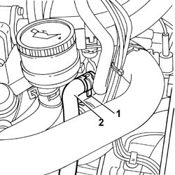

1080G62 COOLANT PIPE FROM F.A.P. AIR HEAT EXCHANGER TO ENGINE OIL/ENGINE COOLANT HEAT EXCHANGER - R.R.
- Path
- Procedures > 10 ENGINE > 1080 EXHAUST EMISSION CONTROL SYSTEM > 1080G F.A.P. EMISSION CONTROL SYSTEM > 1080G62 COOLANT PIPE FROM F.A.P. AIR HEAT EXCHANGER TO ENGINE OIL/ENGINE COOLANT HEAT EXCHANGER - R.R.
- Kind
- repair procedure (removal / refitting; the operation number is the code)
- Applies to
- engines: 2.2 16V JTD; all production periods
- Interactive page
- https://sloeber94.github.io/elrnDB-fUlss/en/#/179007143
Applies to: engines: 2.2 16V JTD; all production periods
 Removing
Removing
 Refitting
RefittingSee in Op. 7055B54 PROTECTIVE SHIELD UNDER ENGINE - R.R.
- Position a suitable container for collecting the coolant fluid.
1. Open the securing band (1a) and disconnect the coolant pipe (1b).

Applies to: engines: 2.2 16V JTD; all production periods
1. Open the fastening band using the special tool.
2. Disconnect the coolant pipe and remove it.
Description | Code | Function | |
|---|---|---|---|
. | Caliper | 1.881.138.000 | Open the retaining bands |

Applies to: engines: 2.2 16V JTD; all production periods
Refitting
Removing- Fit the pipe in place and restore the retaining bands.
See in Op. 7055B54 PROTECTIVE SHIELD UNDER ENGINE - R.R.
- Check the coolant level and top up.